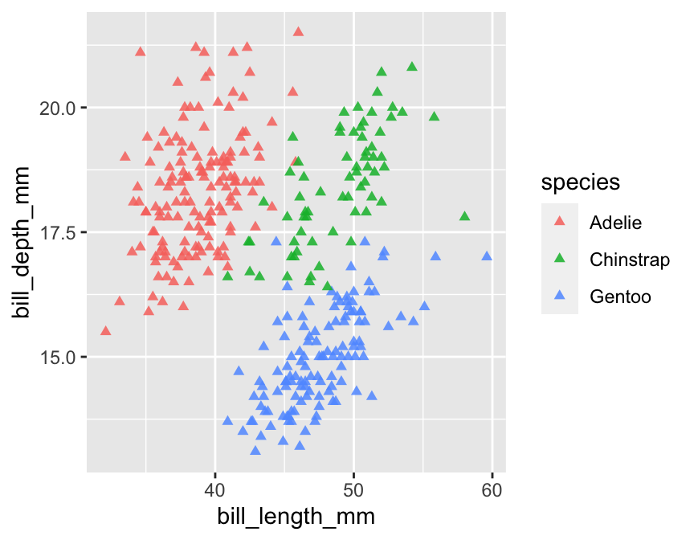
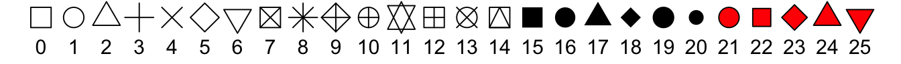
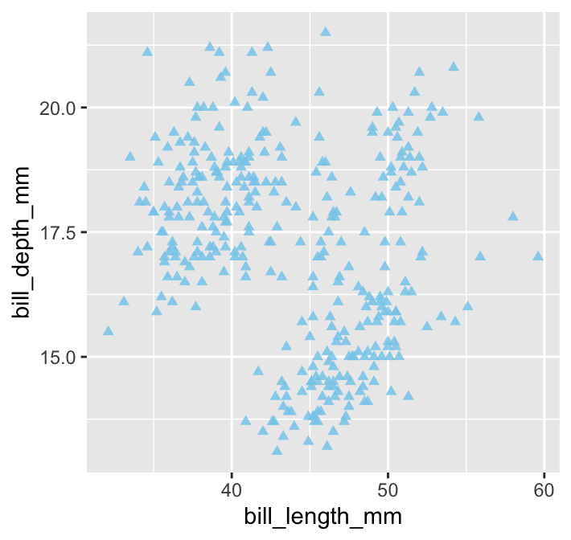
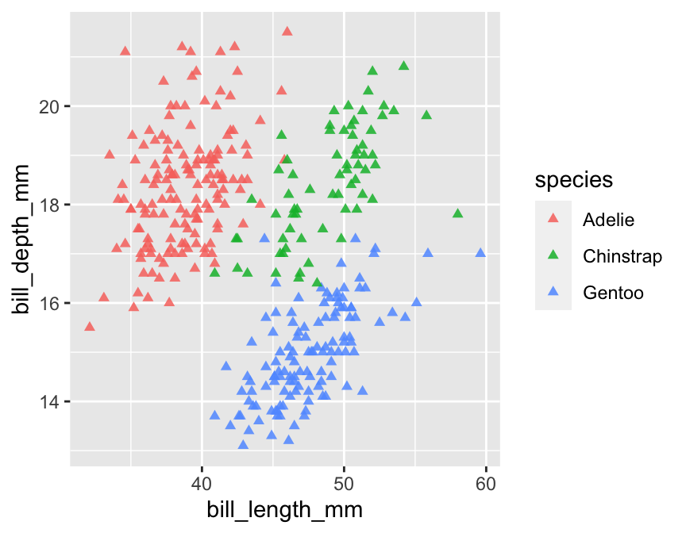
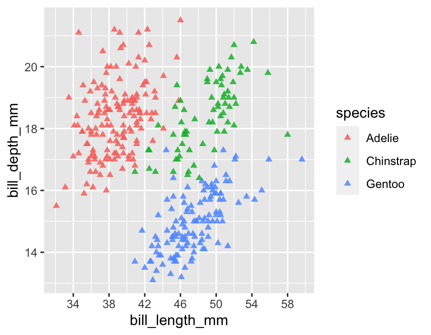
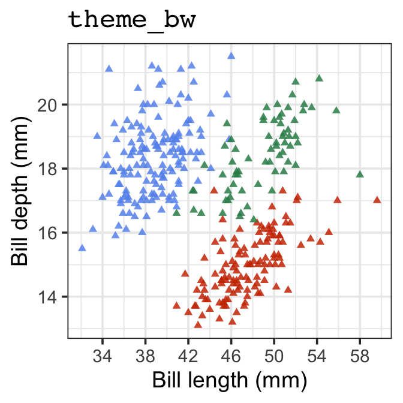
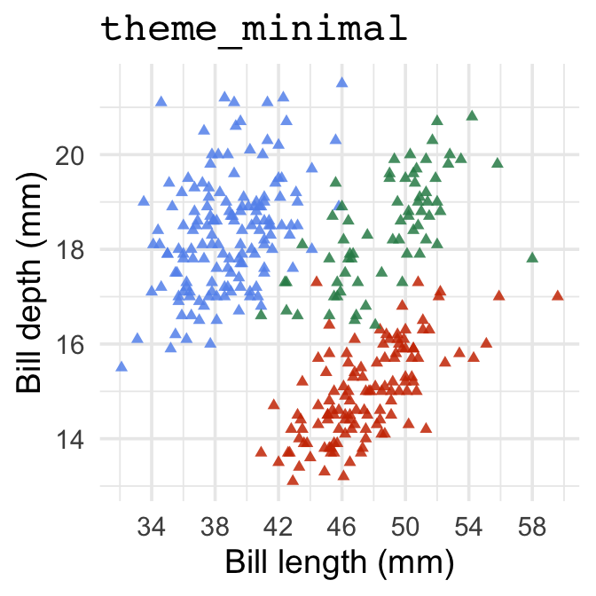
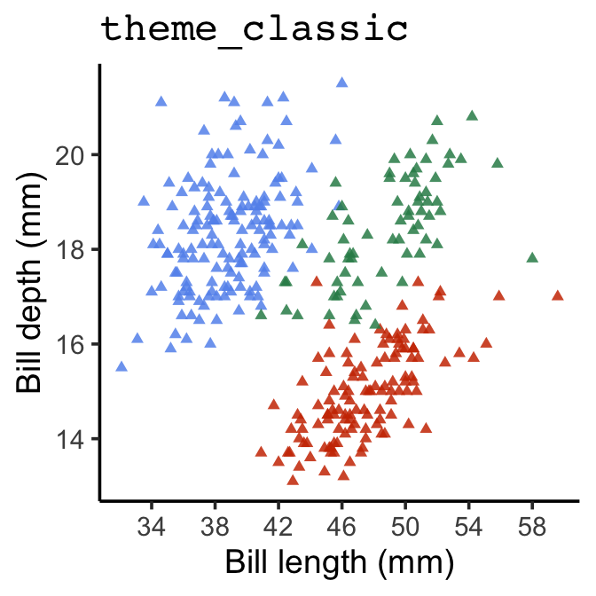
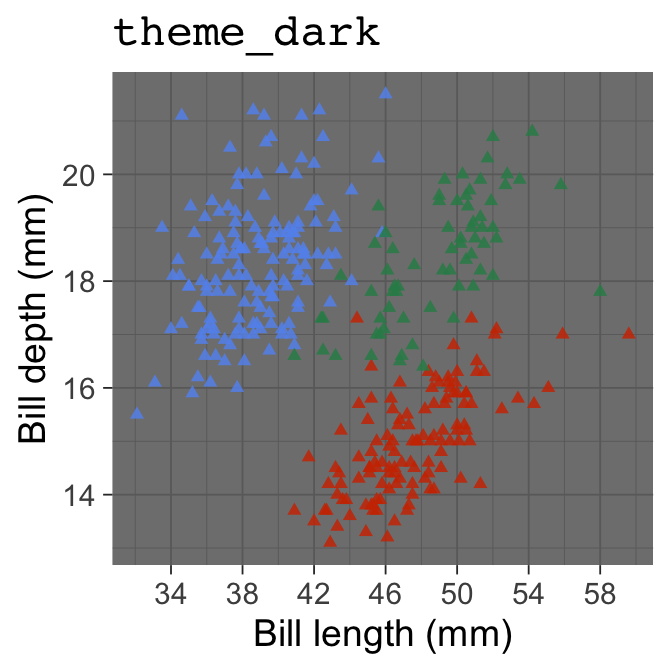

Chapter 14 Customising plots
The default formatting conventions used by ggplot2 have been carefully chosen to ensure the information in a plot is easy to discern. For example, by default, plots include a pale grey background and include gridlines. This is designed to emphasise the data while supporting comparisons. The grey highlights colour differences and ensures the gridlines have little visual impact beyond aiding in the assessment of position. Perfect for exploratory analysis!
Although we can justify these sorts of choices on the grounds that they improve the readability of a plot, the fact remains they are somewhat unconventional and not much-loved by many users. For this reason, we often need to change the appearance of a plot before we include it in a document or presentation—e.g. most published figures use a white, rather than grey, background.
This chapter will demonstrate how to customise ggplot2 plots. We are not going to cover every possible permutation. That would need its own book. Instead, we will explore the main routes to customisation so that we can demonstrate these as we review different visualisations later. Using the penguins data once again, we’ll work on improving the following scatter plot from the Introduction to ggplot2 chapter:
ggplot(penguins,
aes(x = bill_length_mm, y = bill_depth_mm, colour = species)) +
geom_point()
14.1 Working with geom properties
What do we do if we need to change the properties of a geom? For example, how might we change properties like the size or shape of points in our scatter plot? This is reasonably intuitive; we used the geom_point function to add points to the scatter plot, which means we have to set the arguments of geom_point to change their properties.
Let’s rebuild the example scatter plot, this time setting the shape, size and transparency of points:
ggplot(penguins,
aes(x = bill_length_mm, y = bill_depth_mm, colour = species)) +
geom_point(shape = 17, size = 1.5, alpha = 0.85)
The point shape is set with the shape argument. There are a few different ways to specify point shapes in R. We used the numeric coding system in this example (17 = triangle). Unfortunately, the numeric codes aren’t at all intuitive. Here are the more common ones:

The point size is specified by the size argument. This has a baseline value is 1. We assigned size a value of 1.5, thereby increasing the point size relative to the default. We could make the points smaller than the default by using a value less than 1.
We made the points semi-transparent by setting the value of the alpha argument to be less than 1. In graphical systems the ‘alpha channel’ specifies transparency—a value of 0 is taken to mean ‘completely invisible’ and a value of 1 means ‘completely opaque.’ Making objects semi-transparent can be particularly useful when there is a lot of over-plotting.
There are other arguments—such as fill and colour—that can also be used to adjust the way the points are rendered. We won’t look at these here. The best way to learn how these work is to simply experiment with them.
The key message to take away from this little customisation example is this: if we want to set the properties of the geom associated with a particular layer, we do so by specifying the appropriate arguments in the geom_NAME function that defines the layer. This is the route we should use whenever we need to change the appearance of geometric objects, i.e. points, lines, bars, polygons, and so on.
14.1.1 The relationship between aesthetic mappings and geom properties.
In the previous chapter, we saw that we could introduce information into a plot by setting aesthetic mappings in the aes part of its specification. In the scatter plot example, we included information about species identity by mapping the species variable to the colour aesthetic. What happens if we also try to set the colour within the geom_point part?
ggplot(penguins,
aes(x = bill_length_mm, y = bill_depth_mm, colour = species)) +
geom_point(colour = "skyblue", shape = 17, size = 1.5, alpha = 0.85)
All the points are now one colour (‘sky blue’) which means we have lost the species information. What does this example demonstrate? When we set the properties of a geom, this will override any aesthetic mappings that conflict with our choice of customisation. Try to remember that—failing to do so is a good way to become frustrated.
Built-in colours in R
There is nothing special about ‘skyblue’ other than the fact that it is colour name known to R. There are over 650 built-in colour names. To see them, use a function called colours to print them all to the Console. Here are 25 selected at random:
sample(colours(), size = 25, replace = FALSE)## [1] "slateblue3" "lavender" "gray8" "pink"
## [5] "turquoise3" "slategray3" "hotpink" "gray15"
## [9] "tomato4" "grey50" "khaki1" "grey65"
## [13] "darkslategray" "royalblue" "gray29" "grey64"
## [17] "grey6" "palegreen3" "lightyellow" "firebrick1"
## [21] "gray81" "darkorange1" "darkorchid1" "goldenrod1"
## [25] "violetred2"14.2 Working with plot scales
Setting the arguments of a geom_ function applies changes in a layer-specific manner. Other kinds of customisation affect every layer in a plot. Remember what we said about scales in the previous chapter:
The scale part of a ggplot2 object controls how the information in a variable is mapped to the aesthetic properties. A scale takes the data and converts it into something we can perceive, such as an x/y location or the colour and size of points in a plot.
Every aesthetic mapping has a scale associated with it. We adjust ‘how the information in a variable is mapped to the aesthetic properties’ by changing its corresponding scale.
As always, this kind of thing is best understood by example. Let’s adjust the scale associated with the y axis aesthetic by increasing the number of the horizontal lines and their accompanying labels (the ‘guides’).
ggplot(penguins,
aes(x = bill_length_mm, y = bill_depth_mm, colour = species)) +
geom_point(shape = 17, size = 1.5, alpha = 0.85) +
scale_y_continuous(breaks = seq(14, 20, by = 2))
What’s going on here?
The aesthetic we wanted to alter was the y axis position. The y axis in this particular plot is associated with a continuous scale because
bill_depth_mmis a numeric variable. This means we have to apply thescale_y_continuousfunction to tweak the position of the y axis guides.The
breaksargument ofscale_y_continuoustakes a numeric vector to specify where the guides should be drawn. We used the base Rseqfunction to set up a numeric vector containing the sequence: 14, 16, 18 and 20. That tells gglot2 to place the guides at 14, 16, 18 and 20 on the y axis.
The functions that adjust a scale all have the general form scale_AES_TYP, where:
- the
AESbit in the name refers to the relevant aesthetic, and - the
TYPpart refers to the kind of scale we want to define.
Each kind of scale_AES_TYP function has its own set of arguments to control how the scale works. For example, the breaks argument of scale_y_continuous uses a numeric vector to specify where the guides should be drawn. We can do much fancier things if we want to. For example, the trans argument can be used to apply a particular transformation to an axis, such as a logarithm.
Predictably, there is also a scale_x_continuous function. We can use this in exactly the same way to control where the guides on the x axis appear:
ggplot(penguins,
aes(x = bill_length_mm, y = bill_depth_mm, colour = species)) +
geom_point(shape = 17, size = 1.5, alpha = 0.85) +
scale_x_continuous(breaks = seq(34, 62, by = 4)) +
scale_y_continuous(breaks = seq(14, 20, by = 2))
The key message to take away from this is that every aesthetic mapping has a scale associated with it. If we want to change how the information associated with an aesthetic mapping is displayed we have to change the corresponding scale. That suggests we can change the way point colours are associated with the species variable in our example by using one of the scale_colour_YY functions. That is correct:
ggplot(penguins,
aes(x = bill_length_mm, y = bill_depth_mm, colour = species)) +
geom_point(shape = 17, size = 1.5, alpha = 0.85) +
scale_x_continuous(breaks = seq(34, 62, by = 4)) +
scale_y_continuous(breaks = seq(14, 20, by = 2)) +
scale_color_manual(
values = c("cornflowerblue", "seagreen", "orangered3"),
labels = c(Adelie = "P. adeliae", Chinstrap = "P. antarcticus", Gentoo = "P. papua")
)
This uses scale_color_manual to achieve two things—it sets up a custom colour palette (via values) and alters the species category names so that their scientific names are displayed (via labels). Notice we placed the arguments on different lines to make the code a bit easier to read.
Scales are one of the hardest aspect of ggplot2 to get to grips with. There are many different scales, each of which is controlled by a variety of arguments. Fortunately, the defaults used by ggplot2 are often good enough to arrive at a reasonable plot without having to manipulate the scales.
14.3 Adding titles and labels
What else might we like to tweak? Look at the x and y axis labels. These are the names of the variables used in the x/y aesthetic mappings. These labels aren’t too bad, but they could be a bit nicer to look at. We know ‘bill_depth_mm’ stands for ‘bill depth (measured in mm)’ so why not use an axis label more like that?
The axes labels are a feature of the whole plot—i.e. they do not belong to a particular layer. This means we can’t alter axis labels by passing arguments to the function that built a layer (geom_point). We have to use a labelling function. Here is one way to set the axis labels:
ggplot(penguins,
aes(x = bill_length_mm, y = bill_depth_mm, colour = species)) +
geom_point(shape = 17, size = 1.5, alpha = 0.85) +
scale_x_continuous(breaks = seq(34, 62, by = 4)) +
scale_y_continuous(breaks = seq(14, 20, by = 2)) +
scale_color_manual(
values = c("cornflowerblue", "seagreen", "orangered3"),
labels = c(Adelie = "P. adeliae", Chinstrap = "P. antarcticus", Gentoo = "P. papua")
) +
xlab("Bill length (mm)") + ylab("Bill depth (mm)")
This uses the xlab and ylab functions to set the x and y labels, respectively, using + to add them to our graphical object. If we need to add a title to a graph we can use the ggtitle function in the same way. Simple!
The labs function is a flexible alternative to xlab and ylab. It’s more flexible because labs can be used to change the label of every aesthetic in the plot. For example, if we want to set the labels of the x and y axes, and the label associated with species, we use:
ggplot(penguins,
aes(x = bill_length_mm, y = bill_depth_mm, colour = species)) +
geom_point(shape = 17, size = 1.5, alpha = 0.85) +
scale_x_continuous(breaks = seq(34, 62, by = 4)) +
scale_y_continuous(breaks = seq(14, 20, by = 2)) +
scale_color_manual(
values = c("cornflowerblue", "seagreen", "orangered3"),
labels = c(Adelie = "P. adeliae", Chinstrap = "P. antarcticus", Gentoo = "P. papua")
) +
labs(x = "Bill length (mm)", y = "Bill depth (mm)", colour = "Penguin Species")
14.4 Themes
The final route to customisation concerns the ‘theme’ of a plot. We haven’t considered the ggplot2 theme system at all yet. A theme in ggplot2-land deals with the visual elements of a plot that aren’t directly handled by adjusting geom properties or scales. These are the ‘non-data’ parts of a plot—features such as the colour of the plotting region and the grid lines, whether or not those grid lines are even displayed, the position of labels, the font used in labels, and so on.
Here’s a short example that adjusts the legend of the example plot:
ggplot(penguins,
aes(x = bill_length_mm, y = bill_depth_mm, colour = species)) +
geom_point(shape = 17, size = 1.5, alpha = 0.85) +
scale_x_continuous(breaks = seq(34, 62, by = 4)) +
scale_y_continuous(breaks = seq(14, 20, by = 2)) +
scale_color_manual(
values = c("cornflowerblue", "seagreen", "orangered3"),
labels = c(Adelie = "P. adeliae", Chinstrap = "P. antarcticus", Gentoo = "P. papua")
) +
labs(x = "Bill length (mm)", y = "Bill depth (mm)", colour = "") +
theme(
legend.position = "top",
legend.text = element_text(face="italic")
)
Changes to the theme are specified using… the theme function. We used theme to move the legend to the top of the plot (via legend.position) and show the species labels in italics (via legend.text).
The ggplot2 theme system is extremely powerful. Once we know how to use it, we can set up a custom theme and apply it with very little effort. However, that’s not an entirely trivial thing to do because there are so many components of every plot, and most people just google whatever adjustment they want to make when the time comes.
Tweaking each individual part of a theme can be very time consuming, even for experts. Fortunately, there are a range of standard themes built into ggplot2 that produce publication ready figures. Here’s how to apply a built-in theme:
ggplot(penguins,
aes(x = bill_length_mm, y = bill_depth_mm, colour = species)) +
geom_point(shape = 17, size = 1.5, alpha = 0.85) +
scale_x_continuous(breaks = seq(34, 62, by = 4)) +
scale_y_continuous(breaks = seq(14, 20, by = 2)) +
scale_color_manual(
values = c("cornflowerblue", "seagreen", "orangered3"),
labels = c(Adelie = "P. adeliae", Chinstrap = "P. antarcticus", Gentoo = "P. papua")
) +
labs(x = "Bill length (mm)", y = "Bill depth (mm)", colour = "") +
theme_bw(base_size = 13) +
theme(
legend.position = "top",
legend.text = element_text(face="italic")
)This uses + with the theme_bw function to add the built-in ‘black and white’ theme. This theme dispenses with the grey background that so many people dislike in ggplot2. There are a couple of things to note from this example:
To apply the changes to the legend position, we had to place the
themepart after we set the overall theme usingtheme_bw. Thetheme_bwfunction will override thethemechanges if we try to do it the other way round.We set the
base_sizeargument oftheme_bw. This rescales the text in a plot, leaving the relative size of the different elements unchanged. We did not have to do this, but it is worth showing off because it is such a useful trick.
There aren’t that many themes built into ggplot2. Here’s a quick look at them:
